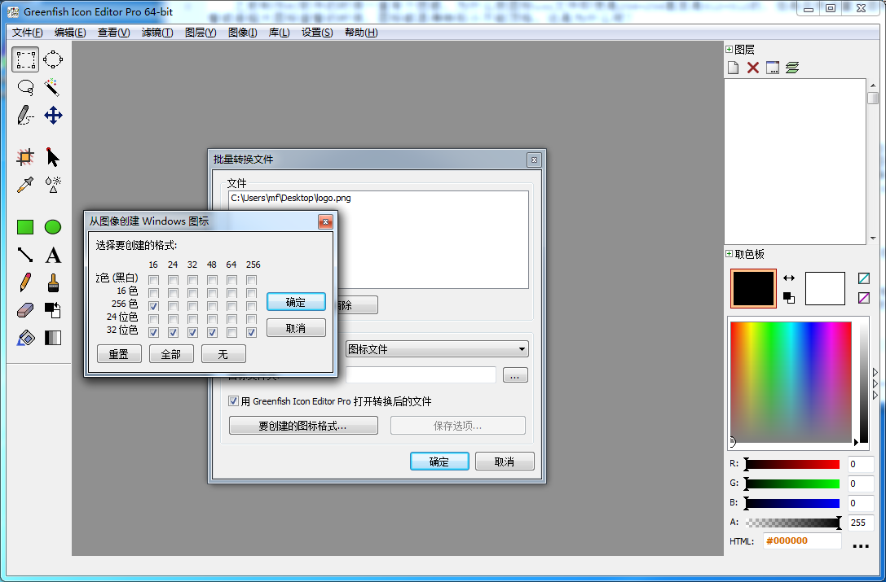

软件图标制作三两事
之前制作PC软件的时候一直有个困惑，为什么我图标ico文件即使是256×256甚至是512×512的，但是在我设置大图标查看或者超大图标查看的时候，图标都显得特别小不能顶格。这是为什么呢？
前言
如摘要所述，这个疑问一直困扰着我，而且百度也找不到类似的教程。后来无意中我查看好压和百度网盘的安装目录的时候发现他们的图标在用2345看图王打开的时候，并不是一张图片。这里可能有点绕，总之意思是什么呢，就是这个图标ico格式的文件，并不只是一张图而已，那是怎么回事呢？这个ico文件里面内含了很多帧，里面含有各种位色和尺寸不等的图标文件。拿好压来说，他里面依次含有16×16(256位色)、256×256(32位色)、48×48(32位色)、32×32(32位色)、24×24(32位色)、16×16(32位色)六帧图片。
制作
哪可能会用 PS 呢，这辈子都不会用 PS！我的原则是不在支线任务上耽误太多时间，所以学习成本比较大的 PS 就首先舍弃。通过我各种检索，我发现了一个能免费在线制作图标的网站，虽然免费在线制作图标的网站有很多，但是大多可自定义的地方非常非常少，甚至没有。我这里推荐 Logo Maker 来免费制作图标。这个网站在线制作图标的素材（图、字体）非巨大并且全部可以免费使用，只是在做完保存的时候最高只能选择 200*200 的像素，不过也够用了，大不了，咱使用 AI人工只能图片放大 来放大呗（手动狗头.jgp）~
转换
经过我大量查看其它知名软件的图标文件发现一个规律，一般情况下，他们最大尺寸的帧都为256×256的，所以你在准备制作图标的时候，准备个大于或等于256×256的即可。
打开“Greenfish Icon Editor Pro”软件选择’文件’->’批量转换文件’，添加上你制作的图片文件，设置转换为“图标文件”，然后点击“要创建的图标格式”，我这里一般按照好压的六帧的来设置。这里需要注意的是，我通过查看好压的图标文件发现他的16×16(256位色)这帧放在第一帧，然后其他事按照尺寸从小往大排序的。怎么调整每一帧的顺序呢？“Greenfish Icon Editor Pro”软件打开之后，鼠标拖动即可改变顺序。

总结
最后我发现我在整个过程中学到了：有时候某件事不是你不会，而且你没有认真去探究。